Для внесения результатов измерений выберите необходимую методику нажав на иконку
и далее перехода на страницу результатов измерений нажмите на иконку
в столбце «Измерения».
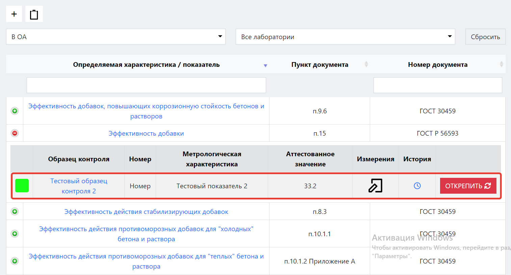
Рисунок 1. Строка внесения результатов измерений в журнале методик
и образцов контроля с метрологическими характеристиками
Функции интерфейса внесения результатов измерений
внесение результатов измерений;
обновление внесённых результатов измерений;
удаление внесённых результатов измерений;
создание КК Шухарта;
автоматический анализа процесса;
просмотр результатов расчетов;
Структура интерфейса
Интерфейс «Результаты измерений» состоит из следующих блоков:
блок основных действий;
блок «Общая информация»;
блок «Контроль»;
блок «Таблица результатов измерений»;
Блок основных действий
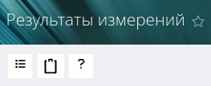
Рисунок 2. Общий вид блока основных действий
Данный блок находится в левой верхней части интерфейса. Он состоит из двух основных кнопок-действий:
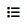
«Журнал методик и образцов контроля с метрологическими характеристиками»
– при нажатии на данную иконку вы перейдете в журнал методик и образцов контроля с метрологическими характеристиками.
«Образцы контроля» – при нажатии на данную иконку вы перейдете к списку образцов контроля.
Общая информация
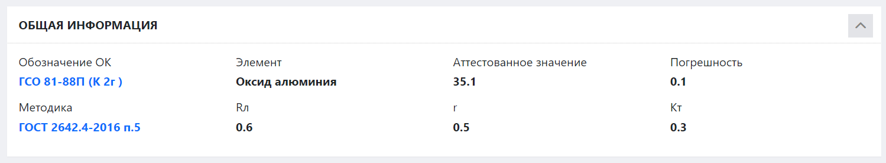
Рисунок 3. Общий вид блока «Общая информация»
Данный блок содержит следующую информацию:
Обозначение ОК
– здесь указывается информация образца контроля который используется для проверки методики.
Методика
– здесь указывается информация методики, которая используется для проверки.
Блок «Контроль»
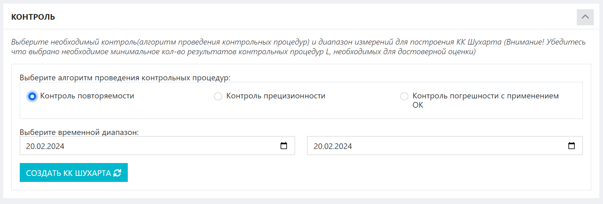
Рисунок 4. Общий вид блока «Контроль»
Данный блок содержит информацию для построения КК Шухарта. Блок содержит следующие поля:
Алгоритм проведения контрольных процедур
– алгоритм контроля который хотим применить для проверки
Временной диапазон
– предназначены для выбора данных, созданных в рамках указанного в них временного диапазона.
Левое поле задает дату начала диапазона, а правое – дату конца диапазона.
Поместите курсор в данные поля и в открывшемся окне календаря выберите нужную дату или впишите ее вручную.
Первоначально в блоке «Контроль» находится только выбор алгоритма проведения контрольных процедур
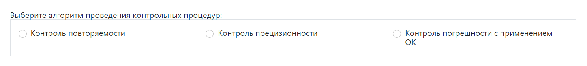
Нажмите на нужный контроль, чтобы получить доступ к созданию КК Шухарта.
После этого можно приступать к выбору диапазону времени и созданию контрольных карт.
Как только вы выберите нужный контроль и внесете всю необходимую информацию, нажмите кнопку
.
Таблица регистрации измерений
В данном блоке содержится вся информация о результатах измерений в рамках данной метрологической характеристики.
Таблица содержит следующие столбцы:
История – история проводимых измерений
№ – порядковый номер
Дата - дата внесения измерения
Результат n-го измерения - результаты измерений
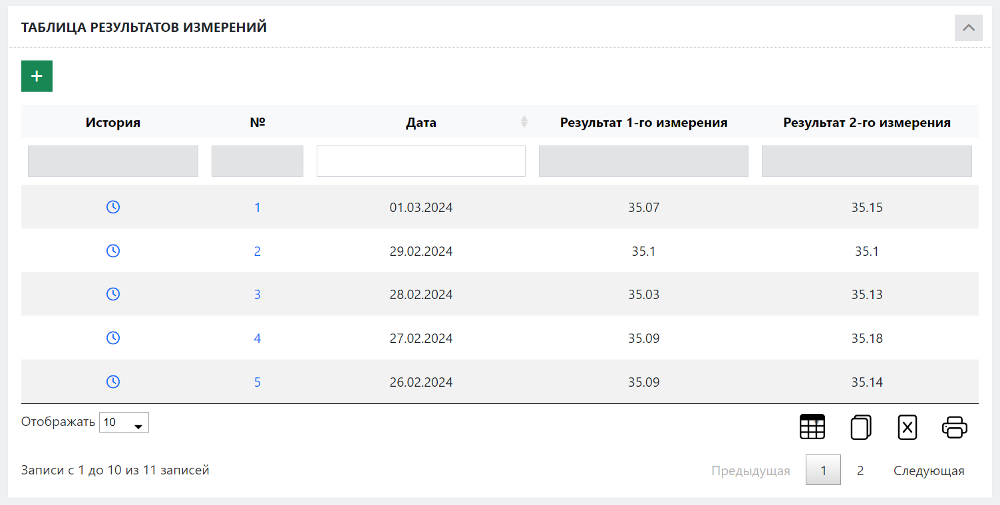
Рисунок 5. Общий вид блока «Таблица результатов измерений»
Сохранение изменений
Для того чтобы сохранить любые внесенные вами изменения, нажмите кнопку
, которая находится в верху таблицы регистрации измерений.
После откроется окно с полями для внесения изменений.
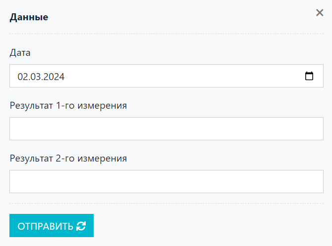
Рисунок 6. Общий вид окна «Сохранение измерений»
Обновление измерений
Для того чтобы обновить любые внесенные вами изменения, нажмите кнопку
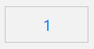, которая находится в строке параллельных определений.
После откроется окно с полями для обновления изменений.
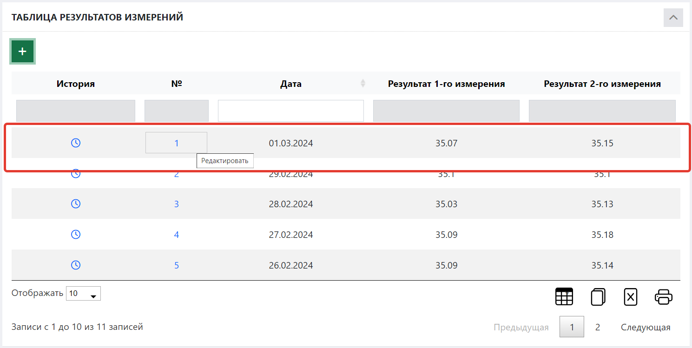
Рисунок 7. Строка параллельных определений с кнопкой обновления результатов измерений
Удаление измерений
Для того чтобы удалить любые внесенные вами изменения, нажмите кнопку
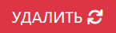, которая находится в окне с полями для обновления изменений.
После откроется окно с полями для обновления/удаления изменений.
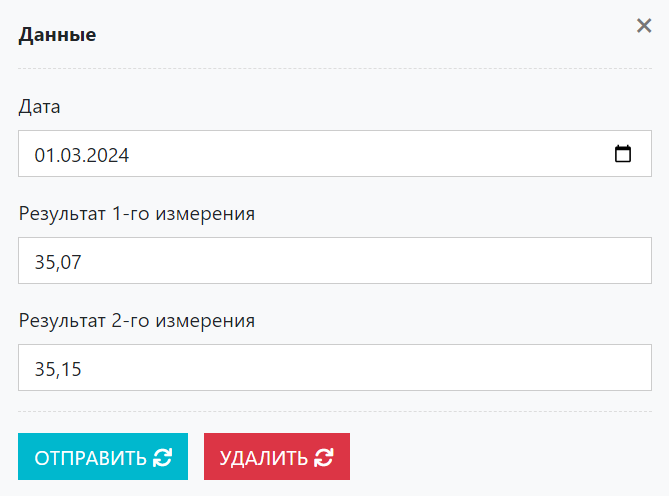
Рисунок 8. Общий вид окна «Обновление/Удаление измерений»
Как создать КК Шухарта
В журнале методик и образцов контроля с метрологическими характеристиками в столбце «Измерения» нажмите на иконку
Вы попадете в интерфейс внесения результатов измерений.
В таблице регистрации измерений нажмите кнопку заполните и сохраните данные измерений.
После этого в таблице появится строка созданного измерения.
В блоке «Контроль» выберите алгоритма проведения контрольных процедур
После того как выбрали алгоритм проведения контрольных процедур можно приступать к выбору диапазону времени
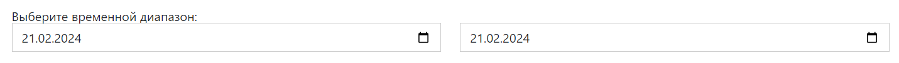
Создаём КК Шухарта, нажав кнопку ,
которая находится после выбора временного диапазона.
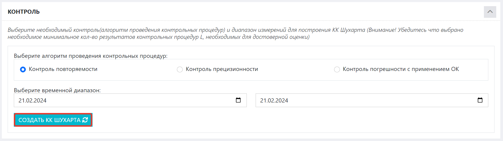
Рисунок 8. Формирование КК Шухарта
В результате будут сформированы КК Шухарта, которые будут отображены в блоке «Контроль».
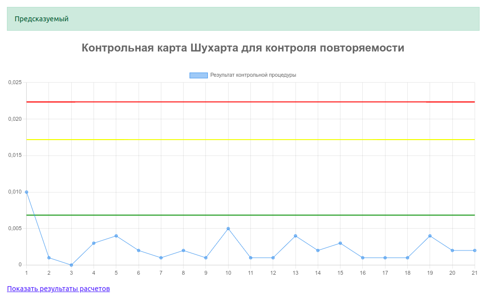
Рисунок 9. КК Шухарта
Для контроля повторяемости или внутрилабораторной прецизионности сигналом к возможному нарушению стабильности процесса анализа служит появление на
контрольной карте следующих ситуаций:
одна точка вышла за предел действия
девять точек подряд находятся выше средней линии
шесть возрастающих точек подряд
две из трех последовательных точек находятся выше предела предупреждения
четыре из пяти последовательных точек находятся выше половинной границы зоны предупреждения
Для контроля точности сигналом к возможному нарушению стабильности процесса анализа служит появление на контрольной карте следующих ситуаций:
одна точка вышла за пределы действия
девять точек подряд находятся по одну сторону от средней линии
шесть возрастающих или убывающих точек подряд
две из трех последовательных точек вышли за пределы предупреждения
четыре из пяти последовательных точек вышли за половинные границы верхней или нижней
зоны предупреждения
восемь последовательных точек находятся по обеим сторонам средней линии, и все эти точки
вышли за половинные границы зоны предупреждения
В случае появления одной из ситуаций выводит предупреждение
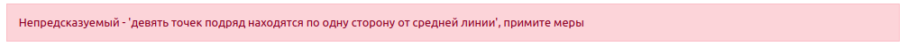
Для просмотра результатов расчёта под графиком нажимаем "Показать результаты расчетов"
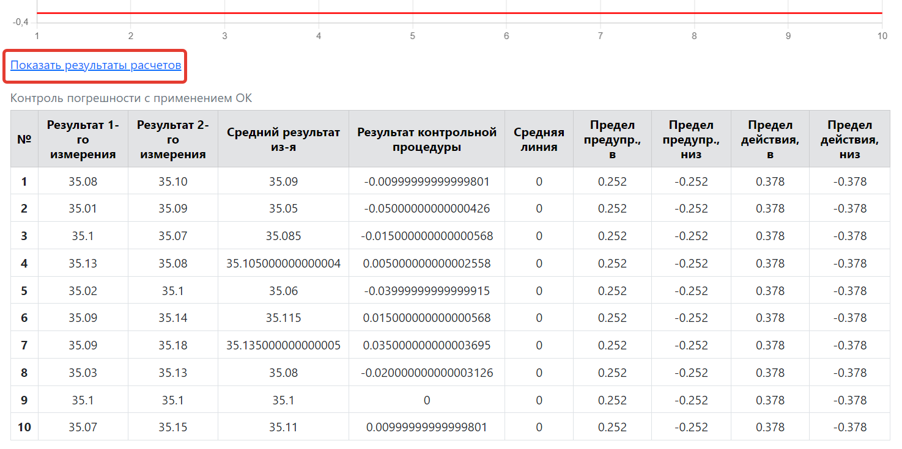
Рисунок 10. Результаты расчетов
 и далее перехода на страницу результатов измерений нажмите на иконку
в столбце «Измерения».
и далее перехода на страницу результатов измерений нажмите на иконку
в столбце «Измерения».
 «Образцы контроля» – при нажатии на данную иконку вы перейдете к списку образцов контроля.
«Образцы контроля» – при нажатии на данную иконку вы перейдете к списку образцов контроля.